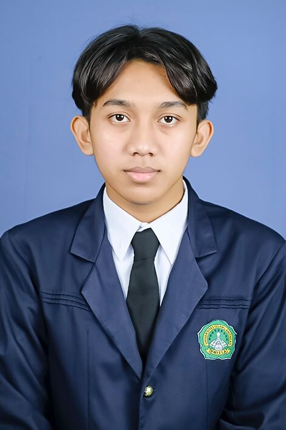

Junior Web Developer / IT Support
Lulusan Teknik Informatika yang mengombinasikan keahlian administrasi operasional dengan kemampuan dasar pemrograman dan pengelolaan basis data. Memiliki pengalaman kerja yang solid dalam mengelola siklus pesanan pelanggan, koordinasi logistik, serta validasi data sistematis dengan tingkat akurasi tinggi. Saya adalah pribadi yang mampu bekerja mandiri maupun dalam tim, serta memiliki semangat belajar tinggi untuk terus mengembangkan keterampilan teknis guna memberikan solusi inovatif di bidang teknologi informasi.
Part-Time • Feb 2023 – Mei 2024
Lamongan • Juni 2024 – Juli 2024
Full-Time • 2023 – 2024